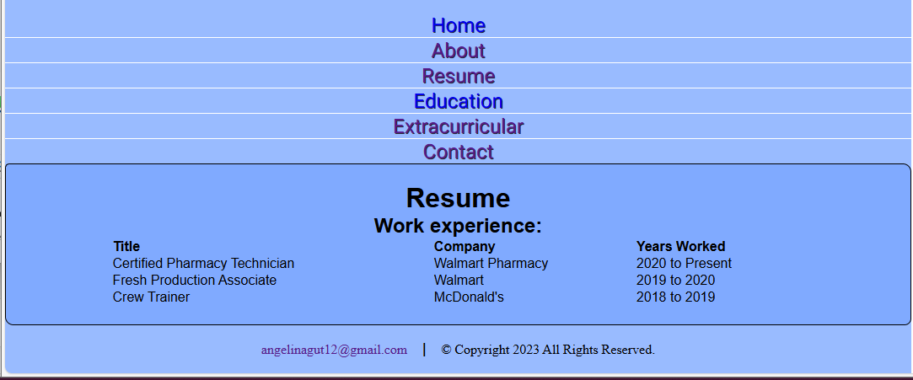

Portfolio Website
HTML • CSS • JavaScript • Responsive Design
Problem
As I continued building projects and preparing for software engineering opportunities, I needed a professional way to present my work, resume, and contact information in one place. A personal portfolio website provided a way to organize that information clearly and share it with recruiters and mentors.
Approach
I built the website using HTML, CSS, and JavaScript with a focus on clear navigation, consistent styling, and mobile responsiveness. The site was designed to include a homepage, about page, resume page, project showcase, and contact page.
Solution
The portfolio website includes:
- Responsive navigation with a hamburger menu
- Dedicated pages for About, Resume, Projects, and Contact
- Project cards with screenshots and descriptions
- Resume download and on-page preview
- Consistent styling across pages
Outcome
Building this website improved my front-end development skills and helped me think more intentionally about user experience, layout, and content organization. It also gave me a professional place to present my work as I continue growing my technical skills.
Project Screenshots


Growth Note
The version shown on this page reflects the improved design and structure I would implement today. The additional screenshots represent portions of the original 2023 submission and demonstrate how my layout, organization, and visual decisions have evolved.